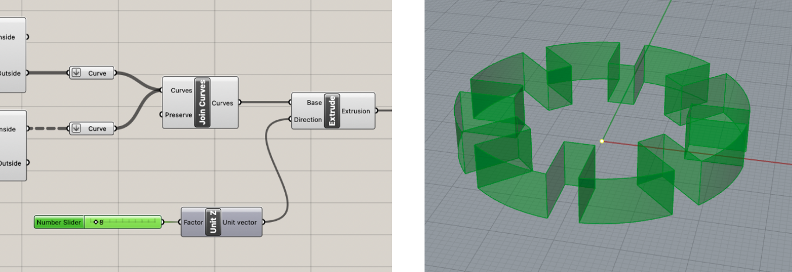
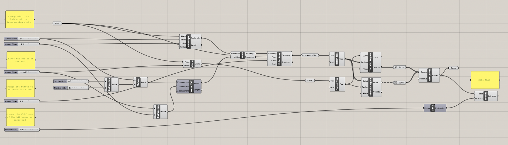
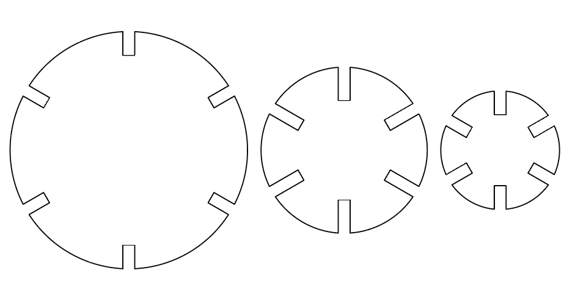
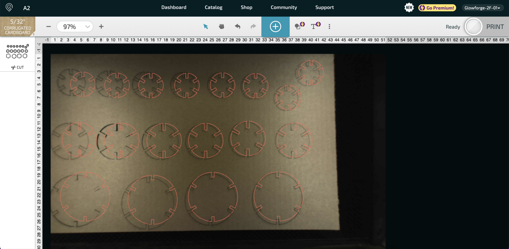

A2: Parametric Modelling with Grasshopper
This assignment asked us to create a parametric model using a Grasshopper definition. For this assignment, I decided to build out the design I created last week. However, I added parameters such that (1) the intersection slots could be wider, (2) the design could be larger, and (3) the model could vary according to the cardboard width.
The steps I went through consisted of four main phases. To begin, I created the basic shapes that would be fundamental for my design, which are a circle and rectangle. I used number sliders so that the model would be parametric, and the measurements I used were consistent with my Assignment 1.

Next, similar to the steps I used in Assignment 1, I added a polar array component to add intersecting slots at all angles. Afterwards, I trimmed the flatten curves twice: once to get the circle with trimmed outer edges and another to get the rectangles with trimmed outer edges. Joining these curves would give us our desired design. As a final step, I added the Extrude component against the z-axis along with a number slider to allow the model to account for different cardboard thickness.

To make the files easier to understand for anyone seeing my work, I organized my components and added notes that highlight (1) what each number slider changes and (2) which component to bake.

The advantages of parametric modelling is that I can quickly make different dimensions of the kit. Thus, I decided to create different sizes of the kit. I first changed the radius of the circle by making versions that are bigger and smaller than the original. Then, I also tested out different lengths for the intersections slots to see which fits better. Finally, in my previous design, the intersection slot was too tight, and so I quickly increased the intersection slot width from 4.2mm to 5mm.

I placed the circles on the laser cutting platform to cut many copies of each while placing enough distance between them. I used the same settings as last time, except this time, I did two passes in order to ensure the kits would be cut conveniently.

Then I pressed cut and the laser printing started.

Here's my final design, which kind of made a triangular model that looks consistent from all angles.


Link to my Rhino file
Link to my Grasshopper file
Link to my Illustrator file
Credit
Thank you to Junchao's presentation and help during class.